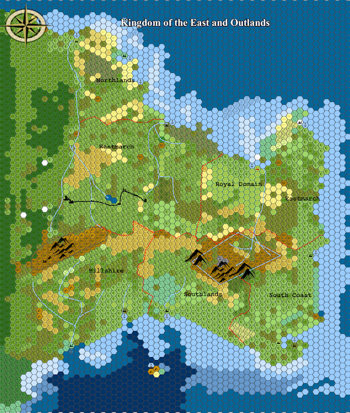
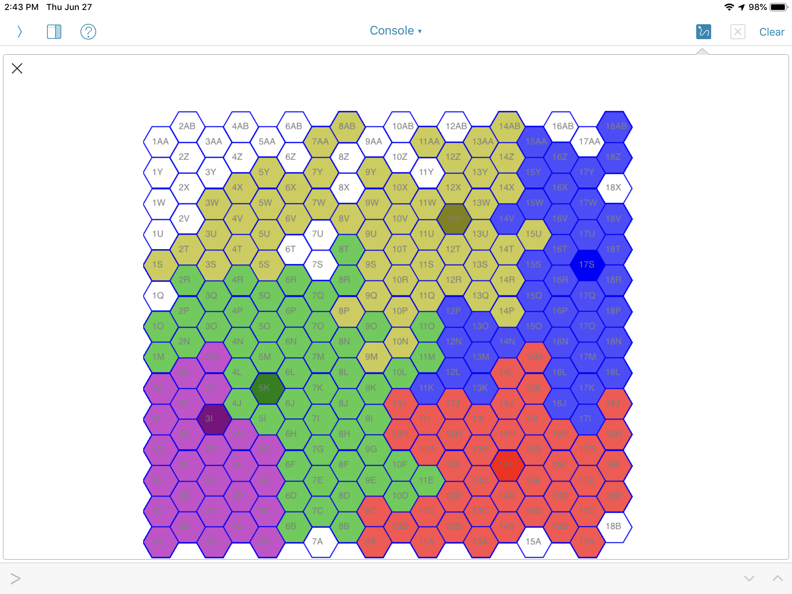

Character Basics¶
This chapter covers character creation and provides an overview of the attributes and skills available to characters. Generally, the OpenD6 Fantasy rules can be used with some modifications. See the OpenD6 Fantasy “Character Basics” chapter. Some modifications will be required, however, for this world.
This chapter also provides some cultural background to help players understand how the characters fit into this world.
Defined Limits¶
The limits for characteristic dice, defined in OpenD6 Fantasy, are used here, also. One new features, Magic Fatigue Points, is annotated with a “+”, below.
- Attributes:
Distribute 18 dice among the seven attributes. The minimum is 1D and the maximum is SD in all attributes except Extranormal attributes, which remains at OD for most characters.
- Skills:
Distribute seven dice among the skills. The maximum number of dice added to any one skill is 3D.
- Move:
This equals 10 meters per round.
- Body Points:
Roll your character’s Physique and add 20 to the total.
- Wounds:
Compute the range of Body Points associated with each Wound level. 80%, 60%, 40%, 20%, and 10% for Stunned, Wounded, Severely Wounded, Incapacitated, and Mortally Wounded.
- Strength Damage:
Drop the pips from your character’s Physique or lifting score (including any Special Abilities or Disadvantages that affect the die code), divide the number by 2, and round up. This is the Strength Damage die code.
- Funds and Silver:
Start with a base Funds die code of 3D. Add any modifiers to this roll. The number of die times 60 silver is the cash equivalent of the Funds check.
- Character Points:
Characters start with five Character Points.
- Fate Points:
Characters start with one Fate Point.
- + Magic Fatigue Points:
These points are consumed by enchantments and recovered by healing practices like sleeping or a specific recuperation skill. Roll your character’s Magic Skill to get the starting level of fatigue points. (Non-mages don’t have fatigue points; when they attempt magic it will be challenging.) See Damage and Healing for more information.
For equipment, Advantages, Disadvantages, Special Abilities, background, and character features, see the appropriate sections in this book.
The essential attributes, also, are defined by the OpenD6 Fantasy rules.
Attributes¶
The seven essential attributes, defined in OpenD6 Fantasy, are used here, also.
Agility
Coordination
Physique
Intellect
Acumen
Charisma
Extranormal
The Extranormal skill is essential for magic or miracles.
Before we can talk about skills – a few of which differ from the OpenD6 Fantasy rules – a little background on the world is required.
Background¶
The Kingdom of the East is a peninsula surrounding a long-dead volcano. The land had an indigenous population that was displaced by invaders from all corners. Fisherman and pirates coming from the continent to the North had the largest impact, imposing their culture and physical traits. The kingdom of Mossing to the south, is isolated by a river and miles of coastal marshlands. Trade caravans =from the continent-spanning empire to the west have little political power. The strongest of the northern invaders declared themselves earls. In order to consolidate power for a unified defense, the earls elected a king, starting a long-running series of regimes, called “Allocations”.
The succession of kings works is a bit like Roman dictators or ancient Greek tyrants. There’s an expected time-limit to their absolute rule. While there is no formal term, most philosophers and historians feel that 10 years is enough time to set the kingdom to rights. The king cannot name a successor, the Council of Earls will do this.
The territory within the kingdom is allocated among the earls: this mens the borders can be shifted by the king’s decree. Ideally, the earls accept the king’s word. Pragmatically, failure to concur will often lead to violence. These “Allocations” are a modern reinterpretation of some early wars of acquisition (as well as blood feuds.) Assassinations, shifting alliances, and outright warfare are the way the earls enforce order among themselves.
Mass movements of troops is (ideally) a prerogative of the king, who has a cadre of royal knights. This means that the wars between the earls are fought with smaller, more nimble and secretive forces.
Some Geography¶
The Kingdom is a peninsula, jutting out into the ocean at the eastern edge of a large continent.

The Kingdom of the East, showing the six earldoms and the royal domain. The map view uses hexes that are about 4 leagues, 21 km, 12 miles.¶
The Kingdom of the East is about 725 km x 725 km. (About 150 leagues.) Outlands are somewhat less than 390 km (80 leagues) in width; a narrow strip of contested land.
The east-west ridge of mountains leads to a region of volcanic peaks that are – nominally – allocated to Southlands, but are largely unexplored. This volcanic uplift raised the peninsula from the sea very recently, about 1,800 years ago. Because the Western Empire predates this uplift; they assume it is simply part of the empire, waiting to be populated. The original inhabitants – emigrating from the Empire – were displaced into the narrow strip of Outlands.
There are (currently) six earls and a king. The earldoms are Northlands, Westmarch, Hillshire, Southlands, South Coast, Eastmarch, and the Royal Domain. There are some Outland Throngs aligned with Westmarch and Hillshire against the Empire. The remaining throngs have shifting alliances.
The borders are defined by a formal Allocations of lands among the earls. See Ancient Political History for more on these shifting borders.
The empire – overall – is a continental landmass. The details of the empire are mostly unknown to people in the Kingdom of the east. This map sketches what little is known.

A truncated sketch of the empire. The Outlands and the Kingdom of the East hang off the northeast corner of the imperial map. It’s adjacent to the blue section from 18L to 18X; not shown in this sketch.¶
The area shown is about 1,600 km E-W and about 1,300 km N-S.
There are 5 kingdoms in the empire. The seat of power is (for the most part) in the NE corner. The focus there is on trade and conquest to the north and further west, both of which involve dangerous multi-week journeys across oceans.
The continental land mass continues south, with a number of other kingdoms.
Ancient Political History¶
One of the earls will ascend to become king by deposing the existing king. Doing this requires an alliance among some earls coerce the king into naming a successor from the Council of Earls. The king’s purpose is a military necessity, not a life-time appointment.
Part of creating an alliance of earls may involve the promise the new king adjusting the borders among the earls. This action is called an “Allocation”, and is recognized as the start of a new regime.
Historically, regimes often last several hundred years with multiple royal successions, providing some overall stability. This system works when a king arranges for a successor and a peaceful transfer of power. The briefest regimes had only a half-dozen kings; the longest regime had a dozen kings.
A king retains their old earldom title as their monarchical name. For example, there will be a king, known as Eastmarch, and an earl, also known as Eastmarch. This situation is unambiguous, since a king is generally addressed as “his highness” and “the king”, where an earl is generally addressed as “my lord” and “Earl Eastmarch.”
The historical story line of Allocations provides a polite veneer to cover the bloodier royal successions. The first five Allocations were divisions of new lands – the spoils of wars to create the Kingdom the East by colonists from the remote northern continent. The land seized from the indigenous inhabitants was divvied up among the earls. Those who refused to be subjugated, were pushed west into the Outlands.
The Fourth Allocation ended with the acquisition of the earldom of Hillshire after a devastating war in the Outlands. It’s likely the Outlanders were acting as proxies for the kingdom of Mossing, immediately to the south. This Allocation added a new earl and a consequent need to rearrange borders among the other earls to balance their power.
The Fifth Allocation lasted for 11 changes of kings; the long span of peace almost ended with general civil war. The final events included the razing of Hillshire under the eyes of a useless king, who ultimately succumbed to assassination. Quick work by Earl Westmarch set up the Sixth Allocation and the more-or-less current borders of the kingdom. Subsequent allocations were not based on acquisition, but consolidation of lands already part of the kingdom.
The Sixth Allocation ended with a later Earl Westmarch deposing King Hillshire amid scattered outbreaks of violence. This period had only has two kings. The first king carved out a separate royal domain in the north central part of the Kingdom to rebalance the earldoms. It didn’t work, of course.
Recent Political History¶
Since each king was an earl, they must name a replacement earl for their former territory. Often this is a trusted knight, an advisor, or a family member. The king’s former earldom can remain loyal to the king, but this isn’t a requirement. Historically, some newly raised-up earls have been ruthlessly ambitious, and failed the king.
Consider the Sixth Allocation as an example.
Earl Hillshire managed to overthrow King Westmarch after a brutal 22-year reign. Earl Hillshire named a trusted knight to be the new Earl Hillshire. This knight rewarded his former earl – now king – by throwing his support in with other earls, straining the alliance that allowed King Hillshire to seize the crown in the first place.
This scenario ended the reign of the second king of the Sixth Allocation, the former earl Hillshire. He was a buffoon who allowed open war among the earls as they struggled for power. The new earl of Hillshire found allies in the Outlands and then disrupted the calculus of power, something the aging and easily mislead advisors failed to understand.
The Seventh Allocation started when Earl Westmarch deposed Hillshire after almost 10 years of war. So far, there have been seven kings in this allocation.
The most recent King Westmarch collaborated with the Western Empire to purchase enough foreign-influenced power to ascend to king, deposing a king who came from Northlands. After only two years, the collaboration was found to be untenable by the other earls. While they were trying to get organized to depose king Westmarch, the king was assassinated.
The end of Westmarch’s reign brings war with the Western Empire into sharp focus. Without an orderly succession, this is likely going to be the end of the current Allocation.
The Kingdom of the East is teetering on the brink of chaos or being absorbed into the Western Empire. Both are bad outcomes; this kind of uncertainty leads to be biggest opportunities for adventurers.
Skills¶
There are a number of additions and deletions from the skills defined in OpenD6 Fantasy. New skills are prefaced with “+”. Skills that are not appropriate are surrounded by “()” and struck out.
SKILLS
AGILITY
acrobatics
fighting
climbing
contortion
dodge
flying
jumping
melee combat
riding
stealth
+ concealed strike: the kind of stealthy blow an assassin uses to administer a poisoned blade.
COORDINATION
charioteering. While there are no wheeled vehicles; there are drag sleds. See Vehicles for details. This skill is helpful to control a horse with a drag sled.
(lockpicking) Sophisticated mechanical locks are not in use. Armed guards are used instead.
marksmanship
pilotry
sleight of hand
throwing
+ poison delivery: includes preparing weapons as well as the specialized sleight-of-hand for avoiding injury when dropping poison in a wine glass.
PHYSIQUE
lifting
running
stamina
swimming
+ recuperation: This skill helps a mage recover the fatigue points consumed by an enchantment.
INTELLECT
cultures
devices
healing
navigation
reading/writing
scholar
speaking
trading
traps
ACUMEN
artist
crafting
disguise
gambling
hide
investigation
know-how
search
streetwise
survival
tracking
+ alchemy: Essential distillation and combinations of elements. This includes creating poisons and elixirs.
CHARISMA
animal handling
bluff
charm
command
intimidation
mettle
persuasion
+ social graces: more advanced honors and salutations.
EXTRANORMAL: MAGIC
Alteration: These enchantments involve change. These are focused on elemental changes: earth, air, fire, and water. Alchemy is the alteration of objects, changing their elemental composition with a more mundane approach of heating, cooling, mixing, etc.
Apportation: Movement within this realm is not an elemental change, and doesn’t fit in the magic system. Movement from this realm to other realms (and back) is this world’s meaning of apportation.
This has unique risks. First, there is a large number of realms; without guidance, a selected realm may be uninhabitable. Second, a habitable realms may have different physical structures. In the alternate realm, the character’s position may be entombed in rock, at the bottom of the sea, in a volcano, or high in the atmosphere. Third, habitable realms have inhabitants.
Conjuration: Creation is severely constrained to a place where all of the free elements are available, and can be combined to create something new. What’s created will be very simple and crude. Getting the elemental balance correct to create something living is extremely difficult. Conjuration demands an additional aspect of the complexity of the conjured object.
Divination: These enchantments involve gaining knowledge. There’s a nuanced but important distinction here: any pre-cognition is likely to be erroneous. Post-cognition may be difficult or impossible to interpret.
+ Psychic Communication: These enchantments allow a mage to communicate with or control another mind. It also opens the mage to be controlled by another mind.
EXTRANORMAL: MIRACLES
divination
favor and blessings
strife and curses
Character Features & Other Details¶
Here’s one way to set height and weight for a character. Make two Physique rolls, apply one to mass and one to height.
Female characters
Mass (kg): 48 + 3 × Physique roll
Height (cm): 155 + Physique roll
Male characters
Mass (kg): 70 + 2 × Physique roll
Height (cm): 169 + Physique roll
Assuming 3D in Physique, a typical female character will be somewhere from 57 to 102 kg and 158 to 173 cm. Typical male characters will be somewhere from 76 to 106 kg and 172 to 187 cm.